ancadramente ferestreancadrament ușăbrâu decorativ între etajesolbancurisoclu placat
Potrivit pentru: campanii ancadramente, brâuri exterior, Înainte/După (după), landing fațade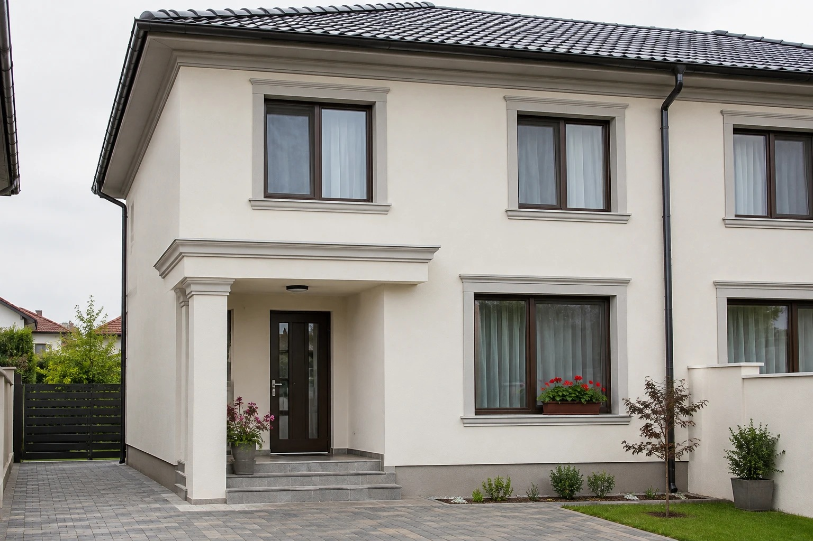
ancadramente ferestre gricornișă porticpilaștri / coloane pătratesolbancurisoclu gri
Potrivit pentru: creative premium (paletă 2027 crem/negru), pilaștri și cornișe, landing hero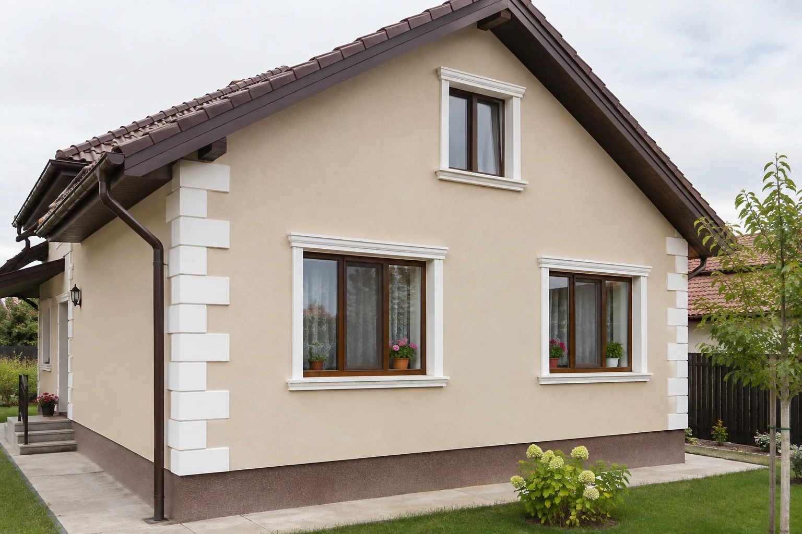
colțare decorative (bosaje) la colțuriancadramente ferestresolbancurisoclu maro
Potrivit pentru: colțare NCL (ex. NCL107, NCL113), ancadramente, Problema/Soluția colțuri plate
ancadramente cu cheie de boltăcornișă sub streașinăsolbancurisoclu maro
Potrivit pentru: chei de boltă, ancadramente clasice, renovare casă bătrânească, cornișe exterior
ancadramente cu pilaștri decorativicornișă sub streașinăsolbancurisoclu gri
Potrivit pentru: renovare casă la țară, ancadramente decorative, campanii cu prețuri accesibile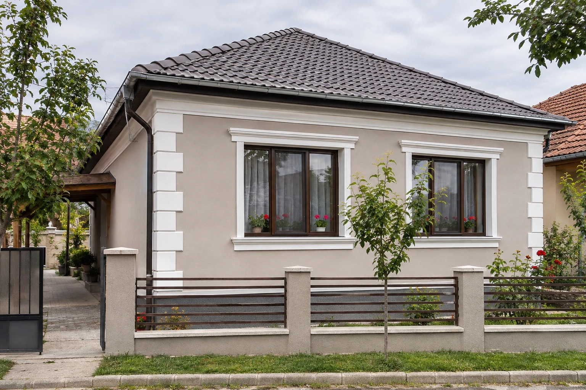
colțare decorative (bosaje) la ambele colțuriancadramente ferestrecornișă sub streașinăsolbancurigard cu stâlpi și capace
Potrivit pentru: colțare NCL (ex. NCL107, NCL113), cornișe exterior, capace gard, paleta 2027 taupe/crem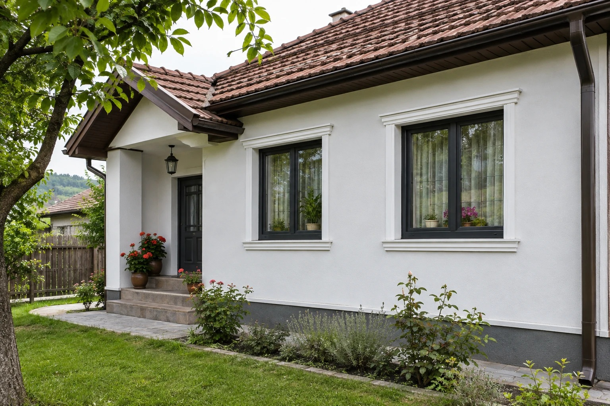
ancadramente cu cornișă deasupra ferestrelorsolbancuriportic la intraresoclu gri
Potrivit pentru: ancadramente cu cornișă, contrast alb + tâmplărie antracit, renovare casă pe parter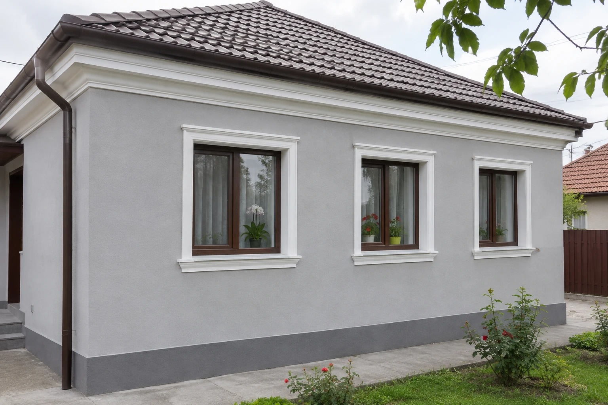
ancadramente ferestrecornișă profilată sub streașinăsolbancurisoclu gri
Potrivit pentru: cornișe exterior (ex. NC104), ancadramente, paletă neutră gri/alb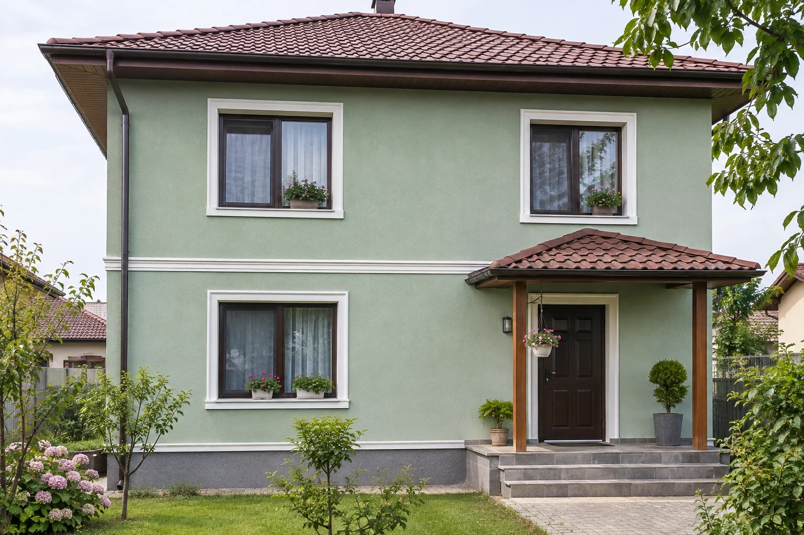
ancadramente ferestre și ușăbrâu decorativ între etajebrâu la socluportic din lemn
Potrivit pentru: brâuri exterior, ancadramente, paleta 2027 (verde salvie), landing fațade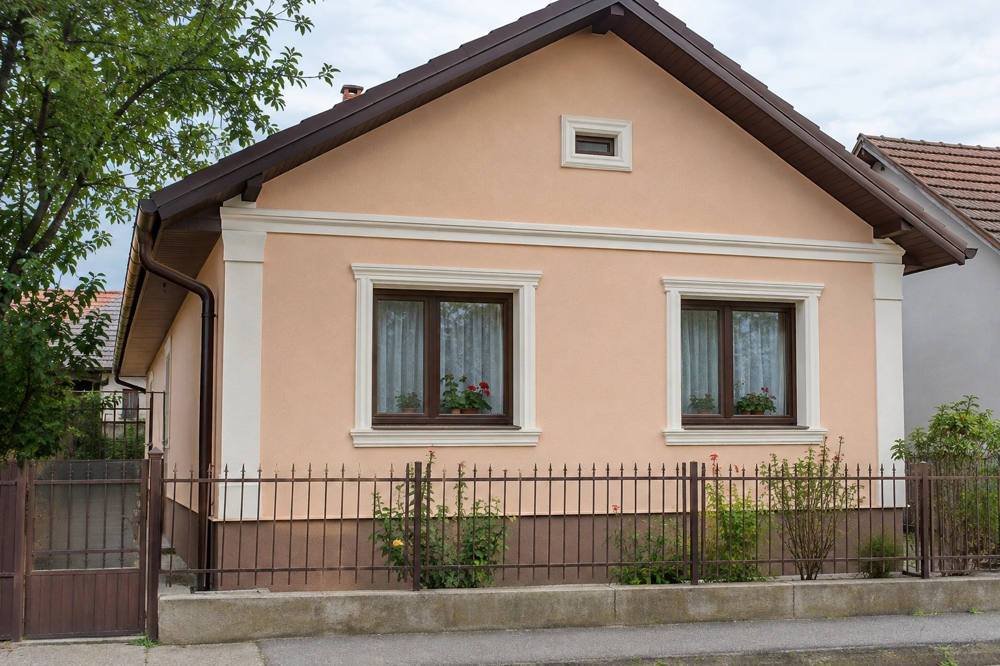
ancadramente ferestreancadrament fereastră mică în frontoncornișă orizontală de frontonpilaștri / benzi verticale la colțurisolbancuri
Potrivit pentru: ancadramente, cornișe de fronton, pilaștri, renovare casă bătrânească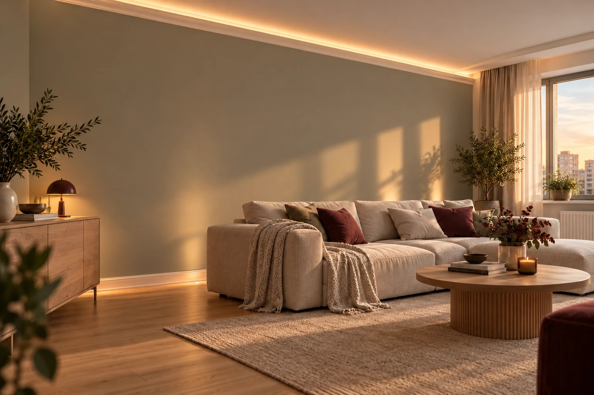
cornișă cu iluminare LED indirectăplintă (posibil LED la podea)perete simplu, fără chenare
Potrivit pentru: ÎNAINTE/DUPĂ cu 13 (chenare din brâu), cornișe LED (ex. L5, IL18), paleta 2027 salvie/crem/vișiniu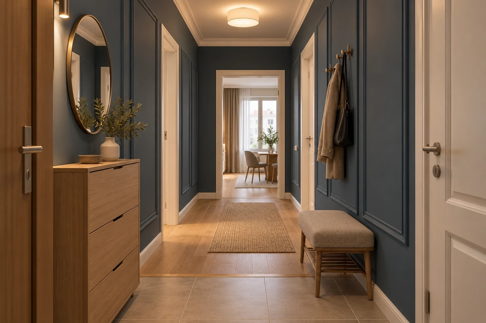
chenare decorative din brâu pe ambii perețicornișă de tavanplintă albăancadramente uși
Potrivit pentru: chenare/brâuri (ex. WO2), cornișe, plinte (ex. FD3), „Holul care face prima impresie”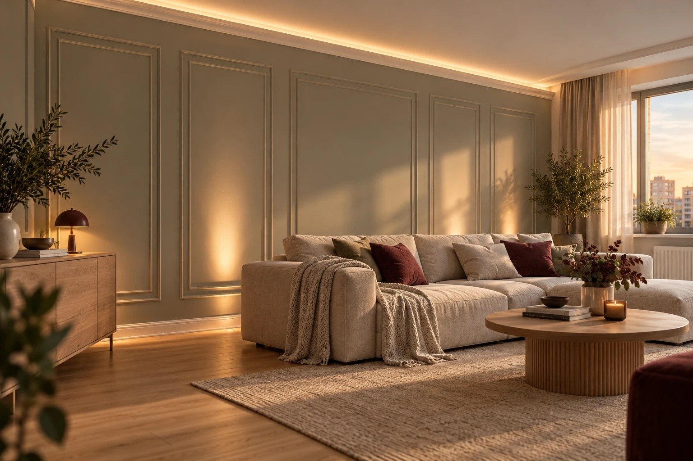
chenare decorative din brâu pe tot peretelecornișă cu iluminare LED indirectăplintă
Potrivit pentru: ÎNAINTE/DUPĂ cu 11, chenare din brâu (ex. WO2), cornișe LED, „Lux cu bani puțini”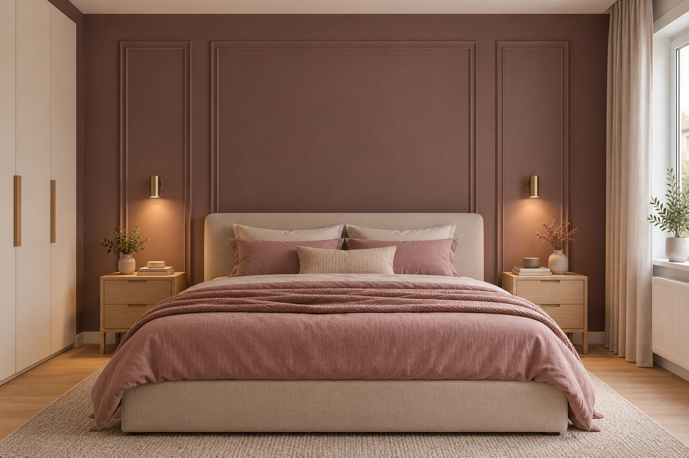
chenare decorative (3 panouri) pe peretele patuluiaplice de pereteplintă
Potrivit pentru: chenare/brâuri, perete accent dormitor, paleta 2027 (mov șters, roz pal)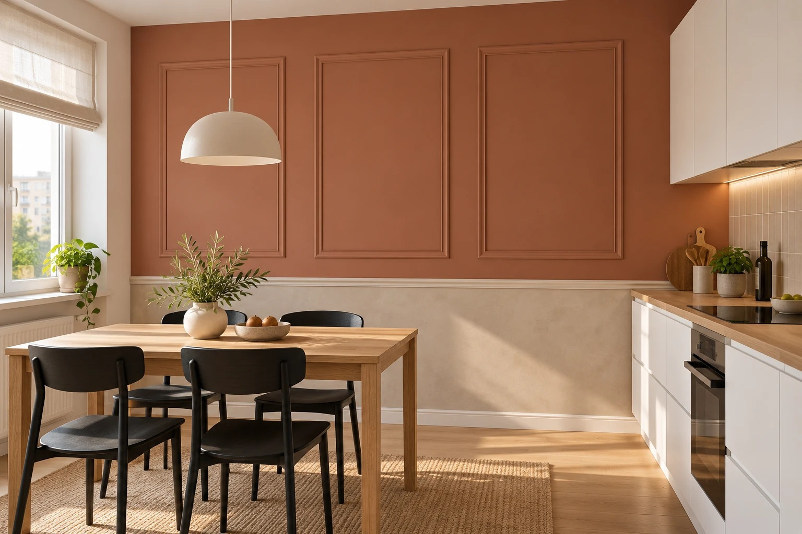
chenare decorative (3 panouri)brâu orizontal (chair rail) la jumătatea pereteluiplintă albă
Potrivit pentru: brâuri (chair rail), chenare, bucătărie / dining, paleta 2027 (argilă)